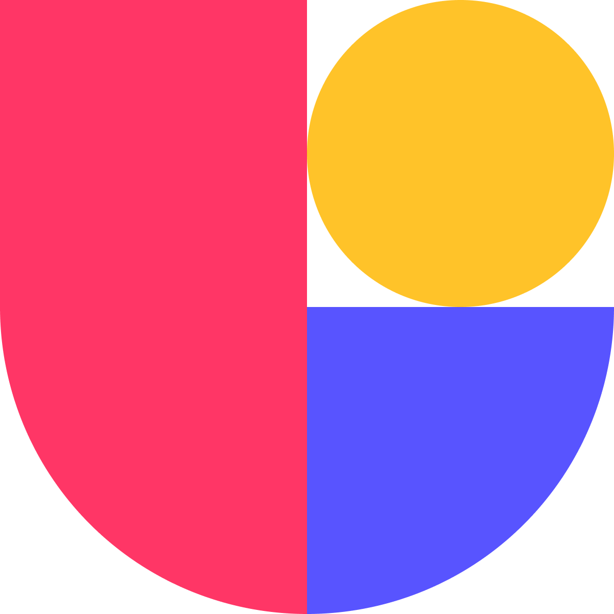

I`m a multilingual UX & digital product designer who blends research, code, & artistry. I focus on accessible Interface & Interaction Design, User Experience research, & AI-assisted design.
/// I am motivated by the moment a complex system becomes simple for the person using it. My work combines user research, accessible interface design and creative technology to make that moment more likely, whether in a gamified application, a brand identity or an exhibition. I completed my MSc in Interactive Digital Media at Trinity College Dublin with Distinction, and my dissertation on AI-generated brand personas was selected for mentorship by IBM Design. I am now looking to join a team where design has real reach, and where it can make digital experiences both more useful and more enjoyable. ///
# SKILLS
- UX research & usability testing
- UI & interaction design
- information architecture & user flows
- wireframing & prototyping
- accessible design (WCAG)
- cognitive accessibility & inclusive UX
- gamification design
- media/audience research
- brand identity & content strategy
- frontend development
- backend (intermediate)
- AI-assisted design & prototyping
- 2D still & motion graphics
- digital & interactive storytelling
- photography
- video production/post-production
- audio editing
# TOOLS

UseberryPhotoshop
Illustrator
After Effects
Premiere Pro
Audition
# AI TOOLS
//text-to-image-to-video workflows
//using multiple leading visual AI models
//full-stack web dev-op (assistant)
//integrating with Figma, Higgsfield & more
//building AI agents for task automatizations
//AI coding agent
//assisting frontend & web development
also proficient with a broader range of AI tools, including Google Gemini, ChatGPT, Copilot, Loveart & others
# EXPERIENCE & EDUCATION
MAY–SEPT 2026
UX & Interaction Design Lead
MODU, Trinity College Dublin
MAY–AUG 2025
Brand & Visual Designer | Marketing Strategist & Audience Researcher
Faculty of Science and Engineering, Maynooth University
MAY–OCT 2024
Digital & Print Media Designer | Research Assistant
‘Under the Feet of Shadows’, MART Gallery & Maynooth Media Dept.
2024–PRESENT
Event & Portrait Photographer
Independent
SEPT 2023–2024
MAP Ambassador & Orientation Leader
Maynooth Access Programme, Maynooth University
MSc Interactive Digital Media
2026, Trinity College Dublin
BA Media Studies
2025, Maynooth University